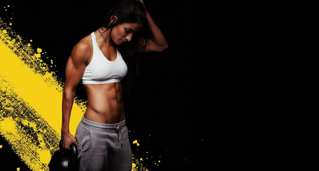
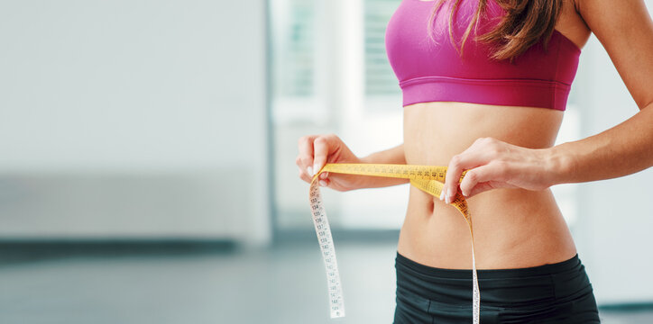

Продукты для восстановления после тренировок
Топ-10 продуктов для быстрого восстановления после тренировок:
1.Яйца — супербелок для восстановления
Яйца содержат около 6 граммов белка и аминокислоту лейцин, которая способствует росту мышц. Кроме того, они богаты витаминами группы B, которые помогают организму вырабатывать энергию.
Как употреблять:
• Готовьте яйца в любом виде: вареные, жареные или омлеты.
• Добавляйте их в салаты или ешьте с цельнозерновым хлебом для баланса углеводов.
2.Лосось — источник омега-3 для снижения воспаления
Лосось богат омега-3 жирными кислотами, которые уменьшают воспаление и способствуют быстрому восстановлению. Он также является отличным источником белка и витамина D, укрепляющего кости.
Как употреблять:
• Готовьте лосось на гриле или в духовке с добавлением лимона и трав.
• Подавайте с овощами и коричневым рисом для сбалансированного блюда.
3.Куриная грудка — классика бодибилдинга
Куриная грудка — это низкокалорийный источник белка, идеально подходящий для восстановления мышц и набора массы.
Как употреблять:
• Запекайте куриную грудку с травами и специями.
• Добавляйте её в салаты, супы или используйте как основу для обедов.
4.Сладкий картофель — энергия для восстановления
Сладкий картофель содержит сложные углеводы, которые восполняют запасы гликогена в мышцах. Он также богат витаминами A и C, которые поддерживают иммунитет.
Как употреблять:
• Запекайте батат в духовке или готовьте пюре.
• Используйте его в качестве гарнира к мясу или рыбе.
5.Греческий йогурт — белок и пробиотики в одном продукте
Греческий йогурт — это источник казеина и сывороточного белка, которые восстанавливают мышцы в течение длительного времени. Плюс пробиотики улучшают пищеварение.
Как употреблять:
• Добавляйте йогурт в смузи.
• Ешьте с ягодами, орехами и медом для сладкого и полезного перекуса.
6.Бананы — быстрый источник энергии
Бананы богаты калием и углеводами, которые восстанавливают электролитный баланс и заряжают энергией. Они также предотвращают судороги мышц.
Как употреблять:
• Ешьте бананы сразу после тренировки.
• Добавляйте их в каши, смузи или протеиновые коктейли.
7.Миндаль — антиоксиданты и полезные жиры
Миндаль богат витамином E, который защищает клетки от повреждений, и полезными жирами, которые способствуют восстановлению мышц.
Как употреблять:
• Ешьте горсть миндаля в качестве перекуса.
• Добавляйте его в салаты, каши или йогурт.
8.Овсянка — медленные углеводы для энергии
Овсянка — это отличный источник сложных углеводов, которые поддерживают уровень энергии на протяжении длительного времени. Она также содержит клетчатку для улучшения пищеварения.
Как употреблять:
• Готовьте овсянку с молоком или водой.
• Добавляйте ягоды, мед и орехи для вкуса и дополнительной пользы.
9.Шпинат — источник железа и магния
Шпинат богат железом, которое улучшает перенос кислорода в мышцах, и магнием, который помогает снять мышечное напряжение.
Как употреблять:
• Добавляйте шпинат в салаты, омлеты или смузи.
• Используйте его как гарнир к основным блюдам.
10.Творог — идеальный продукт на ночь
Творог содержит казеин, медленно усваиваемый белок, который помогает мышцам восстанавливаться ночью. Также он богат кальцием, укрепляющим кости.
Как употреблять:
• Ешьте творог перед сном с ягодами или орехами.
• Добавляйте его в бутерброды или используйте как начинку для блинов.
Тренировки в зале для начинающих

С чего начать тренировки в зале для начинающих
Перед началом тренировок в зале необходимо проконсультироваться с врачом и тренером, чтобы определить уровень физической подготовки, возможные ограничения и разработать индивидуальный тренировочный план.
Общие рекомендации для начинающих:
1.Разминка:
Перед каждой тренировкой проводите разминку в течение 5–10 минут, чтобы разогреть мышцы и суставы. Это поможет избежать травм и повысит эффективность тренировки
2.Базовые упражнения:
Начните с базовых упражнений, таких как приседания, жим лёжа, подтягивания и отжимания. Эти упражнения помогут укрепить основные группы мышц и подготовить тело к более сложным тренировкам
3.Количество повторений и подходов:
Начинайте с небольшого количества повторений (8–12) и подходов (2–3). Постепенно увеличивайте нагрузку по мере улучшения физической формы
4.Отдых между подходами:
Отдыхайте 1–2 минуты между подходами, чтобы дать мышцам время восстановиться
5.Частота тренировок:
Новичкам рекомендуется тренироваться 2–3 раза в неделю, давая телу время на восстановление
6.Разнообразие:
Включайте в тренировки различные упражнения, чтобы разнообразить нагрузку и предотвратить привыкание мышц
7.Контроль за техникой:
Следите за правильной техникой выполнения упражнений, чтобы избежать травм
8.Увеличение нагрузки:
Постепенно увеличивайте вес или количество повторений по мере адаптации к текущей нагрузке
9.Питьевой режим:
Не забывайте пить воду во время тренировки, чтобы поддерживать водный баланс организма
10.Восстановление:
Уделяйте внимание восстановлению после тренировок, включая полноценный сон и питание
Программа похудеть за месяц

Похудеть за месяц, зависит от тебя
Общие рекомендации
1.Кардио-тренировки:
бег, велосипед, скакалка, аэробика. Они помогут активизировать обмен веществ и ускорить процесс сжигания жира.
2.Силовые упражнения:
приседания, отжимания, подтягивания. Они способствуют укреплению мышц и формированию красивого рельефа.
3.Упражнения на пресс:
скручивания, планка, боковые наклоны. Они помогут сформировать пресс и сделать талию более стройной.
4.Растяжка:
необходима для улучшения гибкости тела и профилактики травм.
5.Занятия на свежем воздухе
бег по пляжу, плавание, йога на открытом воздухе. Они помогут не только похудеть, но и насладиться летней природой.
Программа тренировки для похудения за месяц
Неделя 1-2:
- Понедельник: 20-30 минут кардио — бег, велосипед, скакалка
3 круга Понедельник:
• 15 приседаний
• 10 отжиманий
• 20 выпадов — 10 на каждую ногу
• 30 секунд планки
• 15-20 минут растяжки
- Вторник: HIIT тренировка — 30 секунд интенсивного бега/скакалки, 30 секунд отдыха, повторять 10-15 минут
3 круга Вторник:
• 12 подтягиваний на турнике или с резиновой лентой
• 20 приседаний с гантелями
• 10 бёрпи
- Среда: 20-30 минут кардио — бег, велосипед, скакалка
3 круга Среда:
• 15 приседаний
• 10 отжиманий
• 20 выпадов — 10 на каждую ногу
• 30 секунд планки
• 15-20 минут растяжки
- Четверг: HIIT тренировка — 30 секунд интенсивного бега/скакалки, 30 секунд отдыха, повторять 10-15 минут
3 круга Четверг:
• 12 подтягиваний на турнике или с резиновой лентой
• 20 приседаний с гантелями
• 10 бёрпи
- Пятница: 20-30 минут кардио — бег, велосипед, скакалка
3 круга Пятница:
• 15 приседаний
• 10 отжиманий
• 20 выпадов — 10 на каждую ногу
• 30 секунд планки
• 15-20 минут растяжки
- Суббота: Отдыхать от нагрузки
- Воскресенье: Отдыхать от нагрузки
Неделя 3-4:
- Понедельник: 30-40 минут кардио — бег, велосипед, эллиптический тренажер
4 круга Понедельник:
• 20 приседаний с гантелями
• 12 отжиманий
• 24 выпада — 12 на каждую ногу
• 40 секунд планки
• 15-20 минут растяжки
- Вторник: HIIT тренировка — 20 секунд интенсивного упражнения, 10 секунд отдыха, повторять 8 раз
4 круга Вторник:
• 15 подтягиваний на турнике или с резиновой лентой
• 10 приседаний с гантелями
• 12 бёрпи
- Среда: 30-40 минут кардио — бег, велосипед, эллиптический тренажер
4 круга Среда:
• 20 приседаний с гантелями
• 12 отжиманий
• 24 выпада — 12 на каждую ногу
• 40 секунд планки
• 15-20 минут растяжки
- Четверг: HIIT тренировка — 20 секунд интенсивного упражнения, 10 секунд отдыха, повторять 8 раз
4 круга Четверг:
• 15 подтягиваний на турнике или с резиновой лентой
• 10 приседаний с гантелями
• 12 бёрпи
- Пятница: 30-40 минут кардио — бег, велосипед, эллиптический тренажер
4 круга Пятница:
• 20 приседаний с гантелями
• 12 отжиманий
• 24 выпада — 12 на каждую ногу
• 40 секунд планки
• 15-20 минут растяжки
- Суббота: Отдохните
- Воскресенье: Отдохните
- Этот комплекс упражнений сочетает в себе кардио и силовые нагрузки, что поможет ускорить метаболизм и способствовать снижению веса. Не забывайте также об умеренной физической активности в остальные дни недели и правильном питании для достижения желаемых результатов.